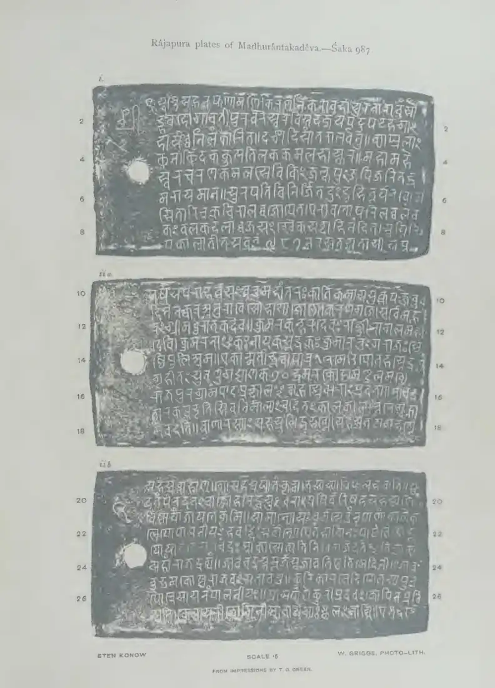
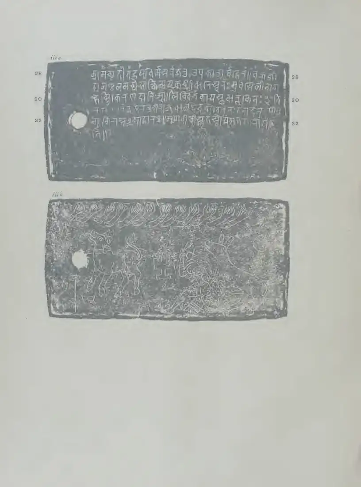

Râjapura plates of Madhurântakadêva
RAJAPURA COPPER PLATES OF MADHURANTAKADEVA.
[ŚAKA] SAMVAT 987.
The discovery of this first copper plate inscription in the wild Bastar State of the Central Provinces is the result of the zeal with which Rai Bahadur Baijnath, B.A., the Superintendent
1 Page 127, note 2. Will some one tell ys whether the name should be spelt Kałaśa or Kalasa. It appears to be spelt either way in the original inscriptions. Thus in Mg. 40 (the inscription preceding the one in question), the Kanarese text has Kalasa in line 11, and Kalaśa in line 12. On p. 68 of his translation Mr. Rice gives us three times Kalaśa and five times Kalaśa; on p. 69 we have four times Kalaśa (not Kalaśa) and three times Kalasa. This last form is certainly wrong, for the second akshara is always la in the original. The variation is only in the third syllable. Mr. Krishṇa Śāstri, in the Epigraphia spells the word consistently Kalasa.
2 See Ep. Carn. VI. 155-262, lines 1-2.
of the State, set himself to make a search for the antiquarian remains in that little known and remote quarter, at my request. Mr. Baijnath has been richly rewarded for his efforts, for, in addition to the present copper plates, he has discovered more than twenty new inscriptions in Sanskrit and Telugu characters, of most of which he has sent me ink estampages and tracings. I have deciphered several of them and they will in due course appear in this Journal. I begin with the copper plates, as this is perhaps the most ancient Sanskrit inscription yet found in Bastar. Mr. Baijnath found the plates in the possession of a Brâhman named Gangâdhar Pârchi of Kâwadgaon close to Râjapura. Gangâdhar received them from his sister-in-law, who found them buried in a field at Nâharnî, sixteen miles from Râjapura.
There are three copper plates, held together by a ring, soldered into what was apparently the lower portion of a seal, which had been broken off. Each plate is about and they weigh , 30 and 35 tôlas, respectively. the weight of the ring being 26 tôlas. The plates are smooth, sufficiently thick, and in an excellent state of preservation. They are inscribed on both sides, except the first one, which is inscribed on one side only. Mr. T. G. Green, Superintendent of the Secretariat Press, Nâgpur, kindly took for me impressions, which are reproduced in the accompanying plate. The plates are numbered 1, 2, 3, on the margin, which was apparently left to prevent the ring holes from coming in between the written lines. The word śri has been engraved in the upper margin of the first plate, over the figure 1.
The second side of the third plate is inscribed with benedictive and imprecatory figures, viz., 12 hands in a row at the top, beneath which there is to the proper left a cow with a bell attached to her neck, and a dagger and a shield beside her feet, a florated linga in the form of a svastika in the middle, and a woman pursued by a donkey to the proper right, with the figure of the sun and the moon over it. My interpretation of these figures is as follows:—The hands are uplifted, apparently as an expression of benediction on the donor, and they are twelve, probably because there were 12 pâtras or donees referred to in the inscription. The cow is apparently drawn to remind us that whosoever appropriates the gifted land, will have to reap the same consequences which a cow's curse can produce, or will fall into the same calamity as a cow is in when deprived of her calf. Śiva is shown as the protector against aggression on the spiritual side, and the ruling king's dagger and shield on the temporal. The sun and the moon indicate that the grant is to last as long as these luminaries endure. Lastly the obscene figure of an ass associating with a woman is a vulgar imprecation implying that the transgressor of a gift should be so low-born.1
The inscription is in the Nâgarî character. The average size of the letters is . They are well formed and clearly written.
The language is corrupt Sanskrit, and except the benedictive and imprecatory verses, which are inserted in a somewhat disconnected manner, the remainder of the inscription is prose. In fact, the whole composition is disjointed, and there are several grammatical slips and spelling mistakes.
The most noteworthy orthographical peculiarities are the representation of the initial i with two dots and a stroke underneath, resembling the Nâgarî figure 2 (ll. 13, 16, 23 and 30). The anusvâra is put at the side of the letter and is represented by a dot with a hala underneath (ll. 2, 3, 5, 6, 8, 10, 12, 13, 15, 16, 17, 18, 20, 21, 22, 25, 26 and 27), but in several instances it is also represented in the ordinary way by a dot on the top of the letter (ll. 1, 3, 4, 7, 10, 12, 14, 16, 19, 20, 21, 22, 23, 24, 26, 28, 30, 31 and 32). One top stroke representative of the mâtris
1 Compare my remarks, above, p. 164.
of é, ai, ð and au is exhibited by a vertical stroke placed before the letter to which it is attached — a practice which is still followed in the Bengâli and Orìyâ writing, but exceptions may be found side by side, where it is placed on the top of the letter according to the practice now followed in writing. Thus, in line 12, the dé of Madhurântakadéva has a top, while the very next dé of Kanharadéva has a vertical stroke preceding the letter da. The latter form, however, predominates, the exceptions being found as regards é in ll. 2, 4, 10, 11, 12, 21, 26, 29 and 31 and of ð in ll. 1, 19, 31, and 32. Ai has been used only once, in line 8, and au twice, in lines 11 and 26, and in each case one of the top mátrás has been represented by a vertical stroke preceding the letter to which it is attached. The letters bha, dha, ra and ksha, invariably appear in their antiquated forms. The letter v is used throughout for b, and s for é, except in the solitary instances of daśa in l. 3 and of érí in ll. 12 and 29. Ja is used for ya (ll. 20, 24, and 27), ri is used for the vowel rí in l. 8, and na for ṇa in l. 6. In line 8 kamvala1 for kamala is a spelling which occurs in other inscriptions. It represents the actual pronunciation of the vernacular word—a pronunciation still kept up in the Chhattisgarh division, of which Bastar forms part.
The object of the inscription is to record the grant of Rájapura village, situated in the Bhramarakôtya mandala, to one Médipôta or a Chhurikâra Médipôta and his descendants, together with 70 gadyáṇaka2 gold. The grant was made by the king Madhurântakadéva, who belonged to the Chhindaka family of the Nâga (Cobra) race. The inscription is dated in the [Śaka] year 987, in the Parâbhava samvatsara, on Wednesday of the bright fortnight of Kârttika month. Although the tithi has not been given, there is a most minute description of the moment of the grant, the nakshatra being stated to be Anurâdhâ, the yóga to be Saubhâgya and the karaṇa to be Gara. From these data the exact date has been kindly calculated for me by Professor Kielhorn who says:—
“The date for Śaka 987 expired corresponds to Wednesday, the 5th October A.D. 1065. On this day the third tithi of the bright half of Kârttika ended 9 hours 17 minutes after mean sunrise, and the nakshatra was Anurâdhâ and the yóga Saubhâgya. The second half of the tithi was the karaṇa Gara. But the Jupiter’s year is not quite correct. By the southern system it should have been Viśvâvasu and by the northern luni-solar system Plavaṅga and by the northern mean sign system Kílaka. The mistake is the same as in the first Kanker3 plates.”
The purpose for which the grant was made is somewhat obscure. I take it to be a compensation for supplying a victim for human sacrifice. Before proceeding to show how I arrive at this conclusion, it may be stated that in Bastar and the adjoining tracts human sacrifices were rampant about seventy years ago. It is notorious that human victims were offered to the goddess Dantéśvarí, enshrined at Dantéwârâ in the Bastar State. Colonel Macpherson of the Madras Army, who was appointed agent for the suppression of Meriah sacrifices and female infanticide in the hill tracts of Orissa, which Bastar adjoins, says4:—“In the worship of Tari Pennu or Earth Goddess the chief rite is human sacrifice. It is celebrated as a public oblation by tribes both at social festivals held periodically and when occasions demand extraordinary propitiation, such as the occurrence of an extraordinary number of deaths by disease or by tigers, or should very many die in child-birth, or should the flocks or herds suffer largely from disease or from wild beasts, or should the greater crops threaten to fail, or the occurrence of any marked calamity to the families of the tribal chiefs. Victims are called Meriah and are acceptable only when they have been acquired by purchase or were born as such, that is, of a victim father. Victims are generally supplied to the Khonds by men of the two races called Panwâ and Gahingâ, who are attached in small numbers to almost every Khond village for the discharge of this and other peculiar offices. The Panwâs purchase the victims without difficulty or kidnap
1 Compare Dr Grierson in J. R. A. S. 1907, p. 1057.
2 Gadyáṇaka is a weight = 32 guñja. See Yâjñavâlkya iii. 258.
3 Above p. 129.
4 J. R. A. S. Vol. XIII. (1852), p. 243 et seq.
them from the poorer classes of Hindús, procuring them either to the order of the Khonds or on speculation, and they moreover constantly sell as victims their own children and children of whom as relatives they are the guardians. Khonds when in distress, as in times of famine, also frequently sell their children for victims, considering the beatification of their souls certain and their death for the benefit of mankind, the most honourable possible. The Meriah grove, a clump of deep and shadowy forest trees, usually stands at a short distance from the village by a rivulet which is called the Meriah stream. It is kept sacred from the axe and is avoided by the Khonds as haunted ground.” Bearing these remarks in mind, I now proceed to examine in how far they can throw light on our inscription. The italics in the above extract are mine, and they should be borne especially in mind, while considering what follows. In ll. 26 to 28 it is stated that “no body enters the chhuriprabandha. There is no place for the preceptor of yóginís. For this purpose this village is taken with a view to do good to all living beings.” From this it is plain that the grant was not made for any spiritual purpose such as the increasing of the religious merit of the king and his ancestors, but with a practical earthly aim, riz., in order to secure the welfare of the general public including cattle and other animals. The grant was not made to a Brâhmana but to a Mêdipôta (ll. 12 to 14) who is styled “Pâtra 12,” and to whom 70 gadyânaka gold were given in addition to the village, with the mutual consent1 of the king, the queen, the prince and officers of State as stated in the grant, evidently in order to make the transaction an out-and-out purchase. Had the donee been a Brâhmana, we should have expected a mention of his parentage, gôtra and caste, but no such information is forthcoming in this grant. In l. 25 Mêdipôta is called chhurikâra, which is probably used in a technical sense having reference to the chhuriprabandha referred to above, and not in the ordinary sense of a knife-maker (black-smith). I am unable to say what chhuriprabandha2 really means, but from the context it appears to stand for something like narabaliprabandha, apparently on account of the great importance of the chhuri or knife in the sacrifice.
With regard to the epithet “12 pâtra” I am inclined to believe that Mêdipôta, whether this word is a proper name or the name of an office, was the head of the 12 persons employed in the work of procuring victims. So late as 1884 A.D., when an investigation was made in Bastar in connection with kidnapping persons for sacrifice, it was believed that there were 12 villages given rent-free to kidnappers of 12 families, with whom the stipulation was that in case they could not procure victims from elsewhere, they must supply them from their own family in consideration of the free grant they enjoyed. Of course the existence of a grant for such a purpose could not be proved, as the sacrifices had been stopped long before the institution of the investigation. But the tradition of 12 families of melliahs or kidnappers of victims is significant and points to a practice which evidently existed in the days of these sacrifices.3 I am further inclined to think that Mêdipôta was an office, Mêdi being the same as Mêli or Melli vulgo Melliah or Malia,4 the word pôta, which in Telugu means a sacrificial victim, being dropped for
1 The Kâlikâ Purâna says :—
If a human sacrifice is performed without the consent of the prince, the performer incurs sin (see Rudhirâdhyâya in the Asiatic Researches, Vol. V. p. 383).
2 [The text has chhuripravadham, which might perhaps be translated “killing with a chhuri.”—S. K.]
3 [The passage in question (l. 14) can also be translated,—“Receivers 12 Mêdipôtas, in their hand property was received.” The Chhurikâra of l. 25 would then be a special Mêdipôta.—S. K.]
4 Capt. MacVicar says :—
“The Meriah offering, whether so called Toki Poojah or Noroboli (Narabali), is essentially the same in object as the boli (bali) of the Doorga Poojah, and to this day the ritual of the Khond is annually celebrated by the Borisoloo or Maliah Pater (Pâtra) at Pooramari, the capital of Chinna Kimedi, on the conclusion of the Dasserah festival—a goat now being substituted for the more precious victim.” Mark the italics, which are mine. (See Report by Capt. MacVicar, 1851, in the History of operations for the suppression of human sacrifice in the hill tracts of Orissa, 1854). It would appear that Melliah (the procurer) and Meriah (the victim) were identical terms, the procurers being regarded in
the sake of brevity. It will now appear that the grant gives sufficient indications pointing to the procuring of a human victim. The village is secured as the residence of the preceptor of the jóginís, who of course dwell in a haunted place, which is naturally avoided by others. The victim is obtained by purchase, with the mutual consent of the king and his subjects, the grant is made to non-Bráhmaṇas, the likely persons to take part in such a ceremony, and all this is done for the purpose of dayá and dharma to all living creatures. Having referred to these main points, I pass over the minor ones which lead to the same conclusion, that this grant was made in favour of procurers of victims for human sacrifices. If therefore the purpose of the grant is really what it appears to be, then I fancy this is a unique record and no similar inscription has hitherto been discovered.
Some remarks about the dynasty of the king mentioned in this grant will be found above on pp. 161 and ff., where I have dealt with the inscriptions of the Nágavamśi kings found in Bastar, most of which are not yet published and which I propose to edit in due course as intimated before. The dynasty is clearly related to the Sinda family of Yelburga. Though styled “Lord of Bhògàvatî, the best of cities,” Madhurântakadêva appears to have been a Maṇdalika (feudatory chief), as the verse in ll. 24-25 shows that his ráj was limited to Bhramarakôtya, which is described as a maṇdala in l. 15. He belonged to the Chhindaka family, one of the 36 Agnikulas1 mentioned by Chand Bardai, the court poet of Prìthvírája.
With regard to the localities mentioned in the record, Rájapura is identical with the present village of the same name, 22 miles north-west of Jagdalpur (the capital of Bastar), on the bank of the Indrâvatî river. There are ruins of a fort there, and it is believed that it was once a royal capital. The present Rája family also dwelt there for some time. Chakrakôtya is, I feel little doubt, the town mentioned by the Kashmirian poet Bilhaṇa in his Vikramâñkadêvacharita, in which he records that Vikrama as yuvarája set out on a series of warlike expeditions, with the permission of his father. He repeatedly defeated the Chòlas and plundered Kâñchî. He assisted the king of Mâlavâ in regaining his kingdom and carried his arms as far north as Gauṇa and Kâmarùpa. He attacked also the king of Simhala or Ceylon, destroyed the sandal wood forests of Malaya Hills and slew the lord of Kêrala. He finally conquered Gângakuṇda (IV. 21) Vêngî (IV. 29) and Chakrakôṭa (IV. 30). After having accomplished these brilliant exploits Vikrama turned homewards, and, on coming as far as the Krìshṇâ, he was suddenly disquieted by the news of his father's death. Dr. Bühler2 remarks that “Bilhaṇa's rhapsodic treatment of this portion of Vikrama's career makes it impossible to determine the chronological order of these wars. Only so much may be considered certain that his last exploits were performed in the south as he came on his homeward march to the Krìshṇâ.” There can be no doubt about these exploits of Vikrama. They were, as related above, the conquest of Gângakuṇda, Vêngî and Chakrakôṭa, and at least these seem to have been conquered in the order in which they have been mentioned. Gângakuṇda was the Chòla capital, situated in the north-east corner of the Trichinopoly district,3 whence Vikrama proceeded north to Vêngî, the country between the Krìshṇâ
the same light as the victims, as they had themselves to become victims in the absence of a procured one. The sacrificers paid the Melliahs, who thus became purchased victims, and they did not care whence the victim was procured so long as one was supplied to them when wanted. Thus to the sacrificers, the procurer and the victim would mean the same thing, but the terms came to be differentiated when a class of procurers grew up and the real victim happened to be a substitute for themselves. A parallel instance of such differentiation in the same word may be found in Kôtwâl and Kôtwâr in the Saugor district, where in spite of the officials regarding them as identical, a social distinction is made out. The Kôtwâl is generally of a higher caste than the Kôtwâr and considers himself the proper village watchman, other menial duties being taken as the proper function of the Kôtwâr.
1 Prithelrája Rásó, Canto 1, page 54 (Nágarî Prachârinî Granthamâlâ series).
2 Ind. Ant. Vol. V. p. 319 footnote.
3 Ind. Ant. Vol, XIX. p. 339.
Plate 1 is bound after this page.
Plate 2 is bound after this page.
and the Gôdâvarî. He apparently crossed the latter and raided the country of Chakrakôta and then wended his way homewards. This occurred just a few years after the present grant was made (1065 A.D.), in as much as Vikrama became king in 1076 A.D. Many a southern king1 likewise raided this somewhat weak power, which must accordingly have been situated near to their kingdoms. Therefore Chakrakôta was not near Dhârâ, as some scholars have supposed, but was contiguous to Vêngî, being situated in the present Bastar state. I think the confusion with Dhârâ is due to the fact that Chakrakôtya had a king named Dhârâvarsha (which has been apparently wrongly interpreted to mean 'king of Dhârâ'2). In an unpublished inscription found at Kuruspâl, a place close to Râjapura, there occurs Chakrakútâdhiśvaráṇâin kulam=alaîn karishṇuḥ . . . samabhavad Dharâvarshanîmô narésvarah. The Narâyanpâla inscription also mentions Dhârâvarsha, whose widow Guṇda-mahâdôvî gave away the Nârâyaṇapura village in her grandson's reign in the year 1111 A.D.3 The name Chakrakôtya probably survives in the present Chitrakûta or Chitrakôta, 8 miles from Râjapura. Bhramarakôtya was possibly an alternative name of Chakrakôtya, which seems to survive in Ghumara, a name given to the fall of the Indrâvatî at Chitrakôta.
TEXT.
First Plate.
1 Ôm4 svasti [|*] Sahasra-phaṇâmaṇi-kiraṇa-nikar-âvabhâsura-5Nâgavamś-ô-
2 dbhava-Bhôgâvatî-pura-var-êsvara6 visada-jaya-paṭu-pataha-gâm-
3 bhâ(bhî)rya-dhvani-lamâkrita7-(|)daśa-dis-âmtarâlardhanu8-(|)vyâghra-lâm-
4 chhana-(|)Chhimdaka-kula-tilaka-kamala-bhâskara (|) mahâ-mahê-
5 svara(śvara)-charaṇa-kamala-sêvi-kimjalka-pumja-pi[m *]jarita-bhra-
6 marâyamâna(qa) (|) surapati-vinirjita-dundubhi-tûrya-rav-ô[t*]trâ-
7 sit-âri-chakra chirâ-lavdha-jôyêta9 (|) êrâvat-ôpari-lavdha-lamva10.
8 kamvala-kadalâ(lî)-dhvaja 11samċkh-aika-savd-âbhinamidita | svasti nri-12
9 pa-kâl-âtîta-sa[m*]vat 987 nava-sata-satâsî-sapta-13
Second Plate ; First Side.
10 varshasa14 parâbhava-samvatum-abhyaintarah-kârtika-mâsa-sukla-pakshê15 vudha-
11 dinê nakvatra anurâvê16 saubhâgya-jôgê17 | karaṇa-gajê18 | sarvê19 mahú-
1 The first raid so far as is known appears to have been made by Vijayâditya III. of the Eastern Châlukya line, who ruled between 844 and 888 A.D. He burnt Chakrakôta (above, Vol. IV. p. 226). Then the Chôla Râjèndra-Chôla I. (A.D. 1011-33) took Sakkara-kôttam (South. Ind. Inser. Vol. II. p. 108), while one of his successors, king Virarâjèndra I., claims to have crossed the Gôdâvarî, passed through Kaliṅga, and advanced against Chakrakôta (ibid. Vol. III. p. 70). Next the Chôla king Kulôttunga, while yet a youth, won his first laurels in battle by storming Chakrakôta. This happened prior to 1070 A.D. and is mentioned in the Tamil poem Kaliṅgattu Paraṇi (X 24), and also in inscriptions (see e.g. Ind. Ant. Vol. XXI. p. 286). Vikrama was probably the fifth raider, the sixth being Vishṇuvardhana Hoysala in the 12th century (Kielhorn's Southern List, No. 396).
2 I would therefore, instead of 'Râjakêsarivarman (i.e. Kulôttunga Chôla I.) conquered the king of Dhârâ at Chakrakôta' read 'Râjakêsarivarman conquered king Dhârâ(varsha) at Chakrakôtta' (see Kielhorn's Southern List, No. 756).
3 See above, page 161.
4 Expressed by a symbol.
5 Read -vamś-ôdbhava.
6 Read -êsvara viśada-.
7 Read -fainkârita.
8 Read -dis-âmtarâlô dhanur-.
9 Read -labdha-jay-ôpêta.
10 Read airâvat-ôpari-labdha-lamba-kamala-.
11 Read śaṁkh-aika-śabd-.
13 Read śaka-nṛi-.
13 Read -sata-sapt-âstti-.
14 Read varshasya.
15 Read samvatsar-âbhyaintara-kârttika-mâsa-sukla-pakshê budha-.
16 Read anurâdhâ-nakshatrê.
17 Read -yôgê.
18 Read gara-karaṇê.
19 Read sarva-muhârttêshu.
12 train śri-Madhurāmtakadēva || kumara1 Kanharadēvaḥ rājñī Nāgala-mahā.
13 dēvi | kumara 2Nāikaḥ nāyaka Sūdrakaḥ3 kumāra Tuṅgarājaḥ srē-4
14 shthi Puliama || ēkānmatī5 -bhūtvā pātra 12 mēđipōta hastē dravyam
15 grihītam suvarṇna-gađyāṇaka 70 Bhramarakōtya-maṇdala-madhyē
16 Rājapura-grāmam pāda prakshāla[y*]itvā · hastē dhārām pradatā(ttam) ||
â-chaṇdra-
17 tāraka-prabhṛiti siva-nirmālyam6 vaditam kāla-kāl-ântarē grihnā-7
18 mam vadati || Vāṇārasyām sahasra-liṅga bhagnē | sahasra-tatāga8 bhagnē
Second Plate ; Second Side.
19 sahasra vrāhmaṇa9 | gō-sahasra-ghātam kṛitvā | tasyasyōpi10 phalam bhavati ||
sva-
20 da[t*]t[â*]m paradat[tā*]m vâ jó(yō) harēd(rēta) vasuṇdharām [[*]] shashṭir11-
varishaha-sahasrāṇi
21 vishṭhāyām jāyatē kṛimi[h*] || sāmānyō=yam dharma-sētuṇ(tur)=nṛipāṇām
kālē ká-
22 lē (yō) pālanīyam(-yō) bhavadbhiḥ [[*]] sarvān=yōpētam12 bhâginaḥ
pārthavēṇdró bhū-
23 yō yāchatē Rāmachaṇdraḥ [||*] Ākās-ôtpatī13 nidhi gaja da[t*]tam iti
grāmya
24 vāhyam rāja-dravyam || 14jāva chadras=cha sūrjas=cha jāva tishṭhati mēdinī ||
() jāva-
25 tu Bhramakōtya rājavaṇsa tāvatu || chhuri-kāra mēđipōtasya putra-
26 pautrē sāsanam15 pālanīyam || grāma-mēdhyē16 chhuri-pravadham17 kō=pi na
pravi-
27 sati18 || kulāyanī19-jōginī-âchāryasya(ḥ) sthalam n=âsti || ētad=arthē
Third Plate ; First Side.
28 grāmam grihītam dāyā-dharma-sarva-jaṇtu-()upakār-ârtha-hētuṇ || Chakrakō.
29 tya-maṇdala-madhyē sākshi nāyaka śri-Dhārēsvaraḥ(śvaraḥ) Mudhasēli Nāga-
30 hasti | karaṇa Dāriā | Likhitam kāyastha-Dhānūkēna(ḥ) iti
31 lekha[pī] · dhṛitam kumara20 Tuṅgarāja Dhāmadēva Gôvardhanaḥ
Danārdanaḥ21 pātra
32 Gâgirā sādhu Sāhāraṅga(-su ?) | Maṇavridhi-22 svahastō=yam matam= ârôpaya-
33 ti ||
1 Read kumāra.
2 Read kumāra Nāyakaḥ.
3 Read Śūdrakaḥ.
4 Read śrēshṭhi.
5 Read ēkānumati-; cf. ēkamatībhūtvā in ll. 29, 30, and 33 of the Siyadoni inscription (above, Vol. I. p. 177).
6 Read śiva-nirmālyam=uditam.
7 Read grihṇām=īmam.
8 Read -tadāga.
9 Read brāhmaṇa.
10 Read tasy=âsy=ápi.
11 Read shashtiṇ varsha-sahasrāṇi.
12 Read sarvān=ēvam bhávinaḥ pārthivēṇdrān bhúyó bhū.
13 Read ákás-ôtpatti.
14 Read yávach=chandras=cha sūryas=cha yávat=tishṭhati mēdinī yávat=tu Bhramarakōtyó rāja-vaṇsō=pi távati.
15 Read śásanam.
16 Read -mēdhē.
17 Read -prabandham.
18 Read °šati.
19 Read kulāyint-yógint.
20 Read kumāra.
21 Read Janārdana. In Bastar and the adjoining Ôriyâ country this name is commonly pronounced Danārdana, and I have found a Tahsilđár of Kālāhandi who actually writes his name so. All these names should properly be in the instrumental.
22 Read Maṇivriddhi.
TRANSLATION.
Om ! Hail ! (In the reign of the king) born of the race of the Nâga (Cobra), which is resplendent with the mass of rays (proceeding from) the jewels in (its) thousand hoods ; who is lord of Bhôgâvatî, the best of cities ; while the space between the ten quarters is resounding with the deep sound from the shrill drums (proclaiming his) brilliant victories ; whose crest is a bow and a tiger ; who is (as it were) the sun to the lotus (-like) crest jewel of the Chhindaka family ; who resembles a bee which is rendered yellow by the mass of the pollen served to the lotus feet of the great Mahêsvara ; whose circle of enemies is terrified by the sound of the dundubhi (drum) and târya (musical horn) won from Indra ; who is endued with victories gained since a long time ; whose banner is the lotus and plantain (leaf) supported on (the back) of Airâvata (white elephant) ; and who is hailed by the sound of conches only : in the year of the (Śaka) king 987 expired, in the month of Kârttika, during the currency of the Parâbhava-samvatsara, in the bright fortnight, on Wednesday, in the Anurâdhâ lunar mansion, in the Saubhâgya yôga and Gara karaṇa, in all these auspicious moments, the illustrious Madhurântakadêva, Prince Kanharadêva, Queen Nâgala Mahâdêvî, Prince Nâyaka, Nâyaka Śûdraka, Prince Tuṅgarâja and Śrêshthin Puliama, having unanimously agreed, the village Râjapura (situated) in the Bhramarakôtya maṇdala is granted, after washing the feet and (accompanied) with pouring streams (of water), (and) 70 gadyâṇaka gold are received in the hand of (by) Mêđipôta, (who is the head) of the twelve pitras (persons worthy of receiving gifts). The gift is declared as Śivanirmailya (as sacred as a gift offered to Śiva and therefore inviolable), as long as the moon, the stars, etc., endure. If any one from time to time says: “I take it,” the result for him also (will be the same as in the case of) breaking a thousand liniyas in Bâṇâras, breaking a thousand tanks, and killing a thousand Brâhmans and a thousand cows.
“He who resumes land given by himself or given by another becomes a worm in ordure for sixty thousand years.”
“Common is this religious bridge to princes, and it should be guarded by you from age to age. Thus does Râmachandra again and again conjure all future lords of the earth.”
The produce from the heavens, deposits (in the earth) and (wild) elephants1 are given, but other things outside the village are the State property. So long as the sun and the moon and the earth and the royal race of Bhramarakôtya endure, so long (must this charter be observed). This charter is to be respected in the case of Chhurikâra Mêđipôta's sons and grandsons.
Nobody enters the chhuriprabandha at the village sacrifice. There is no place for the preceptor of the resident (local) jôginis. For this purpose this village is taken, for the benefit of all creatures, for the purpose of (showing) kindness and (performing) virtue. In the Chakrakôtya maṇdala the witnesses are :—Nâyaka Śrî Dhârêsvara, Mudhasélî, Nâgahasti, (and) Karaṇa Dâriâ. Written by Dhânûka Kâyastha.
The pen (engraving stylus) (was) touched by Kumâra Tuṅgarâja, Dhâmadêva, Gôvardhana, Danârdana, Pâtra Gâgirâ (and) Sâdhu Sâhâraṅga (Sâhârasu ?). This is in Maṇavṛidhi's hand (writing) (which) sets up (expresses) the (general) opinion.
1 In Blochman's Ain-i-Akbari, Vol. I. page 122, the following occurs :—
“Elephants are chiefly found in the Sûbah of Agrâ, in the forests of Bayâwân and Narwar as far as Berâr, in the Sûbah of Allahâbâd, in the confines of Pattah and Ghoraghât and Ratanpur, Nandanpur, Sargachl and Bastar.”

